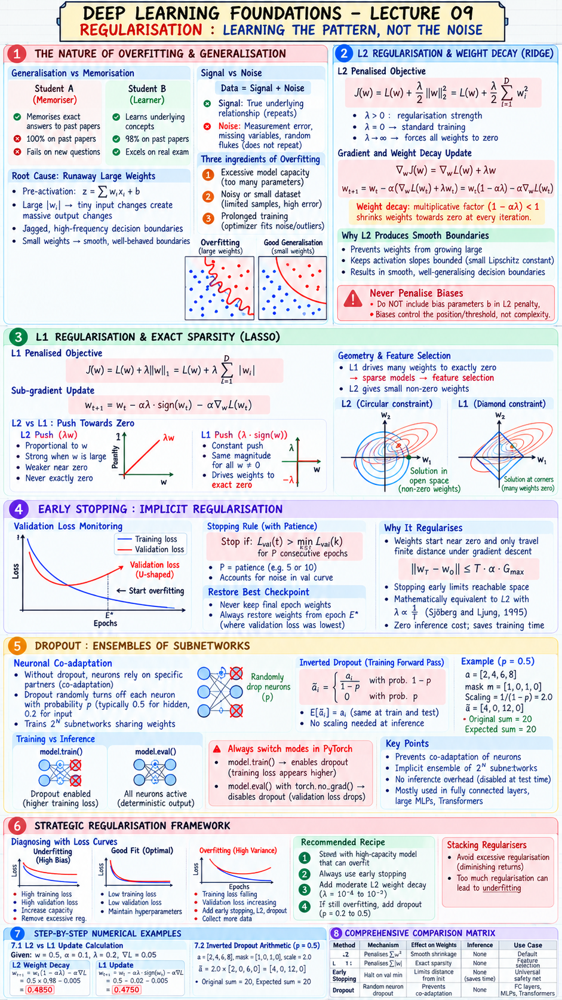

Executive Summary & Formula Sheet
Core Concept: Neural networks are universal approximators with immense parameter capacity. When trained unconstrained, they do not just learn the underlying data-generating distribution (signal); they also memorize idiosyncratic sampling noise and spurious correlations. Overfitting manifests geometrically as runaway weight magnitudes, yielding high-frequency oscillations and jagged decision boundaries. Regularisation encompasses techniques designed to reduce generalization error on unseen test data, often by keeping weights small, enforcing sparsity, halting training at optimal validation loss, or breaking neuronal co-adaptation.
- L2 Regularised Objective: $$J(w) = L(w) + \frac{\lambda}{2} \|w\|_2^2 = L(w) + \frac{\lambda}{2} \sum_{i} w_i^2$$
- L2 Weight Decay Update: $$w_{t+1} = w_t (1 - \alpha \lambda) - \alpha \nabla L(w_t)$$
- L1 Regularised Objective: $$J(w) = L(w) + \lambda \|w\|_1 = L(w) + \lambda \sum_{i} |w_i|$$
- L1 Subgradient Update: $$w_{t+1} = w_t - \alpha \lambda \cdot \text{sign}(w_t) - \alpha \nabla L(w_t)$$
- Inverted Dropout (Training Forward Pass): $$\tilde{a} = \frac{m \odot a}{1 - p}, \quad m_i \sim \text{Bernoulli}(1 - p)$$
- Evaluation Rule: Disable Dropout during inference (\(p = 0\)). Never apply weight decay to bias parameters \(b\).
Lecture 09 Visual Cheatsheet

Click image to open high-resolution version in new tab
1. The Nature of Overfitting & Generalisation
1.1 Generalisation vs Memorisation
A machine learning model is not constructed to perform well on data it has already seen; it is built to produce accurate inferences on unseen data drawn from the same underlying distribution. Consider two students preparing for an examination:
- Student A (Memoriser): Memorises the exact answers to past papers. On past papers, Student A scores 100%. On the actual exam with newly phrased questions, Student A fails.
- Student B (Learner): Learns the underlying concepts, principles, and problem-solving methods. On past papers, Student B scores 98%. On the real exam, Student B excels.
In deep learning, Training error is NOT the goal. Achieving near-zero training loss is trivial with high-capacity models. The true objective is minimizing Generalisation error (Test error).
1.2 Signal vs Noise & Three Ingredients
Real-world datasets always consist of two superimposed components: Data = Signal + Noise.
- Signal: The true invariant physical or structural relationship between features \(x\) and targets \(y\). Signal repeats predictably across training, validation, and test sets.
- Noise: Irrelevant measurement errors, missing latent variables, and stochastic sample flukes. Noise never repeats identically on new samples.
- Excessive Model Capacity: The network has far more parameters, layers, and non-linear expressive power than needed to capture the signal.
- Noisy or Small Dataset: The training dataset has limited sample variety or contains high measurement error, confusing the optimizer.
- Prolonged Training: Optimizing for excessive epochs allows the optimizer to fine-tune weights around individual training outliers.
1.3 Root Cause: Runaway Large Weights
Where does overfitting physically come from inside a neural network? Excessively large weight magnitudes.
For a sigmoid or softmax layer, the pre-activation is \(z = \sum w_i x_i + b\). When weights \(|w_i|\) grow into large numbers (e.g. 20, 50, 100), tiny changes in an input feature \(\Delta x\) cause massive swings in \(z\). The network develops massive partial derivatives \(\left|\frac{\partial \hat{y}}{\partial x}\right|\), creating violent, jagged ripples in the decision boundary that wrap around individual noisy training points.
Conversely, when weights are kept small, the model behaves smoothly and almost linearly over small intervals, establishing gentle, well-behaved boundaries that generalize reliably.
2. L2 Regularisation & Weight Decay (Ridge)
2.1 The L2 Penalty & Loss Formulation
The most widely utilized regularisation technique is L2 Regularisation (historically known as Ridge Regression or Tikhonov Regularisation). We penalize large weights by augmenting the empirical data loss \(L(w)\) with the squared Euclidean norm of the weight vectors:
Where \(\lambda > 0\) is the regularisation hyperparameter. If \(\lambda = 0\), we recover unconstrained training. As \(\lambda \to \infty\), the model is forced to set all weights to zero.
2.2 Derivation of the Weight Decay Multiplier
Computing the gradient of the regularised objective \(J(w)\) with respect to parameter \(w\):
$$\nabla_w J(w) = \nabla_w L(w) + \lambda w$$
Substituting this gradient into the standard gradient descent update rule:
$$w_{t+1} = w_t - \alpha \nabla_w J(w_t) = w_t - \alpha \left(\nabla_w L(w_t) + \lambda w_t\right)$$
Factoring out \(w_t\):
Notice the multiplicative factor \((1 - \alpha \lambda)\). Because \(\alpha > 0\) and \(\lambda > 0\), this factor is strictly less than 1 (e.g., \(1 - 0.001 \times 0.1 = 0.9999\)). Before taking the gradient step, the optimizer shrinks the weight toward zero by a tiny percentage at every single iteration!
2.3 Smooth Boundaries & Never Penalizing Bias
Why L2 produces smooth boundaries: By preventing weights from growing large, the slope of the activation functions remains bounded. The Lipschitz constant of the network is small, ensuring that similar input vectors always produce similar predictions.
Do NOT include bias parameters \(b\) in the L2 penalty! Biases control the absolute position/threshold of the decision boundary, not its curvature, complexity, or sensitivity. Penalizing biases restricts the network from shifting its activations to fit shifted data distributions without providing any regularisation benefit.
3. L1 Regularisation & Exact Sparsity (Lasso)
3.1 The Absolute Value Penalty Formulation
L1 Regularisation (Lasso - Least Absolute Shrinkage and Selection Operator) penalizes the sum of the absolute values of the weights rather than their squares:
The derivative of \(|w|\) with respect to \(w\) is the sign function \(\text{sign}(w)\), defined as \(+1\) for \(w > 0\), \(-1\) for \(w < 0\), and undefined at \(w = 0\) (where we use the sub-gradient zero).
3.2 Sub-gradient Update & Constant Push to Zero
The gradient descent update rule under L1 regularisation is:
Consider the fundamental difference in the push towards zero between L2 and L1:
- L2 Push (\(\lambda w\)): The penalty force is proportional to \(w\). When \(w = 10\), the push is strong (\(10\lambda\)). But when \(w = 0.01\), the push shrinks to \(0.01\lambda\). As \(w\) nears zero, the restoring force vanishes. L2 weights approach zero asymptotically, but never become exactly zero.
- L1 Push (\(\lambda \cdot \text{sign}(w)\)): The penalty force is constant regardless of whether \(w = 10\) or \(w = 0.0001\). It exerts a relentless constant pressure of magnitude \(\alpha \lambda\) towards origin. This drives non-essential weights to exact zero (\(w = 0.0000\))!
3.3 Geometry of Sparsity & Feature Selection
In high-dimensional feature spaces, driving weights to exact zero produces sparse models. When weight \(w_j = 0\), feature \(x_j\) has zero influence on the network output. L1 regularisation performs automatic embedded feature selection, discarding uninformative inputs and drastically reducing inference compute memory.
In constrained optimization, L2 corresponds to a circular/spherical constraint ball \(\sum w_i^2 \le C\), whose smooth tangency points with elliptical loss contours occur in open space. L1 corresponds to a diamond/hyper-rhombus constraint \(\sum |w_i| \le C\), whose sharp corners sit precisely on the coordinate axes (\(w_i = 0\)), making corner intersections overwhelmingly likely.
4. Early Stopping: Implicit Regularisation
4.1 Validation Loss Monitoring & Patience
During neural network training, training loss decreases monotonically with each passing epoch. However, validation loss follows a U-shaped curve: it decreases initially as the model learns general signal, hits a global minimum at epoch \(E^*\), and then begins climbing upward as the network starts memorizing training noise.
Early Stopping halts training when validation loss stops improving. Because mini-batch gradient descent is stochastic and validation curves are noisy, we introduce a patience parameter (e.g. \(patience = 5\) or \(10\)):
4.2 Restoring Best Checkpoint Weights
Never keep the weights from the final epoch when early stopping triggers! If patience is 10, the model has already been overfitting for 10 epochs. Always cache model checkpoints and restore the weights from epoch \(E^*\) where validation loss was lowest.
4.3 Mathematical Equivalence to Small Weights
Why does early stopping regularise the model so effectively? At initialization, weights start near zero (\(w_0 \approx 0\)). Under gradient descent updates \(\Delta w = -\alpha \nabla L\), parameter vectors only travel a finite distance from the origin:
Stopping after \(T\) iterations limits the parameter space that can be reached. Sjöberg and Ljung (1995) proved that early stopping is mathematically equivalent to L2 regularisation with an effective penalty \(\lambda \propto \frac{1}{T}\). It is a "free lunch" regulariser: zero computational cost at inference and actually saves GPU training time!
5. Dropout: Ensembles of Subnetworks
5.1 Neuronal Co-adaptation & Bernoulli Masking
Introduced by Srivastava, Hinton, Krizhevsky, Sutskever, and Salakhutdinov (2014), Dropout addresses the root cause of overfitting in dense deep networks: complex co-adaptation. In an unconstrained network, individual neurons learn to rely on specific partner neurons to correct their mistakes, creating brittle interdependent structures.
During training, dropout randomly turns off (drops) each hidden neuron independently with probability \(p\) (typically \(p = 0.5\) for hidden layers, \(p = 0.2\) for input features) by multiplying activation vector \(a\) element-wise with a binary Bernoulli mask \(m \sim \text{Bernoulli}(1 - p)\).
5.2 Inverted Dropout & Activation Scaling
If half the neurons are turned off during training, the expected sum of inputs to the next layer is cut in half: \(E[\sum \tilde{a}_i] = (1 - p) \sum a_i\). At test time, all neurons must be active to maximize inference accuracy.
In standard dropout, activations had to be multiplied by \((1 - p)\) at test time. Modern frameworks instead use Inverted Dropout: during training, active activations are scaled up by \(\frac{1}{1 - p}\) immediately:
Now \(E[\tilde{a}_i] = (1 - p) \cdot \frac{a_i}{1 - p} + p \cdot 0 = a_i\)! The expectation is identical across train and test time, requiring zero modifications during test inference.
5.3 Training Mode vs Test Mode (model.eval())
Dropout represents an implicit ensemble of \(2^N\) distinct subnetworks sharing weights. Each mini-batch trains a randomly thinned subnetwork, preventing any neuron from relying on an idiosyncratic peer.
Always switch modes explicitly:
model.train(): Enables dropout masks and random thinning. Notice that training loss will appear artificially higher due to missing neurons!model.eval()withtorch.no_grad(): Completely disables dropout, using the full deterministic ensemble. Validation loss often drops noticeably upon entering eval mode.
6. Strategic Regularisation Framework & Decision Matrix
6.1 Diagnostic Loss Curve Interpretation
Always diagnose model behavior by plotting Training Loss and Validation Loss simultaneously across epochs:
| Curve Signature | Diagnosis | Prescription |
|---|---|---|
| High Training Loss, High Validation Loss | Underfitting (High Bias) | Increase network capacity, add layers, remove excessive regularisation, train longer. |
| Low Training Loss, Low Validation Loss | Good Fit (Optimal Generalisation) | Maintain hyperparameters; model has learned underlying signal. |
| Training Loss continues falling, Validation Loss curves upward | Overfitting (High Variance) | Add Early Stopping, increase L2 weight decay, add Dropout (p=0.2-0.5), collect more data. |
6.2 Stacking Regularisers: Diminishing Returns
It is tempting to stack L2 weight decay + L1 + Dropout + Early Stopping simultaneously. However, excessive regularisation chokes the representation capacity of the network, converting an overfitted model directly into an underfitted model.
Standard Recommended Recipe:
- Start with a high-capacity model that can easily overfit the training data.
- Always activate Early Stopping with patience (free safety net).
- Add moderate L2 Weight Decay (\(\lambda = 10^{-4}\) to \(10^{-2}\) via AdamW).
- If validation loss still diverges, insert Dropout (\(p = 0.2\) to \(0.5\)) into deep fully-connected layers.
6.3 Comprehensive Comparison Matrix
| Method | Mechanism | Effect on Weights | Inference Overhead | Primary Use Case |
|---|---|---|---|---|
| L2 Regularisation | Penalizes \(\sum w^2\) | Smooth shrinkage towards zero | None (weights baked in) | Standard default for all deep models |
| L1 Regularisation | Penalizes \(\sum |w|\) | Drives non-essential weights to exact zero | None (sparse model) | Feature selection, compact compressed models |
| Early Stopping | Halt on val loss minimum | Restricts distance from initialization | None (saves training time) | Universal safety net on every training run |
| Dropout | Random neuron deactivation | Prevents co-adaptation; ensemble effect | None (disabled at test time) | Fully connected layers, large MLPs, Transformers |
7. Step-by-Step Worked Numerical Walkthrough
7.1 L2 vs L1 Parameter Shrinkage Calculation
Let current parameter value be \(w = 0.5000\), base learning rate \(\alpha = 0.1\), regularisation strength \(\lambda = 0.2\), and data gradient \(\nabla L = 0.0500\).
Update equation: \(w_{t+1} = w_t (1 - \alpha \lambda) - \alpha \nabla L\)
- Decay factor: \(1 - (0.1 \times 0.2) = 1 - 0.02 = \mathbf{0.98}\)
- Weight after decay: \(0.5000 \times 0.98 = \mathbf{0.4900}\)
- Data gradient step: \(0.1 \times 0.0500 = \mathbf{0.0050}\)
- Final updated weight: \(0.4900 - 0.0050 = \mathbf{0.4850}\)
Update equation: \(w_{t+1} = w_t - \alpha \lambda \cdot \text{sign}(w_t) - \alpha \nabla L\)
- Because \(w = 0.5000 > 0\), \(\text{sign}(w) = +1\)
- L1 penalty step: \(\alpha \lambda = 0.1 \times 0.2 = \mathbf{0.0200}\)
- Data gradient step: \(0.1 \times 0.0500 = \mathbf{0.0050}\)
- Final updated weight: \(0.5000 - 0.0200 - 0.0050 = \mathbf{0.4750}\)
Notice that L1 removed a full \(0.0200\), while L2 removed only \(0.0100\) (since \(2\lambda w = 0.02 \times 0.5 = 0.01\)). L1 pulls significantly harder on small weights towards exact zero!
7.2 Inverted Dropout Activation Arithmetic
Consider a hidden layer vector with 4 activations before dropout: \(a = [2.0, 4.0, 6.0, 8.0]\). We apply inverted dropout with dropout probability \(p = 0.5\) (keep probability \(1 - p = 0.5\)).
- Scaling factor: \(\frac{1}{1 - p} = \frac{1}{0.5} = \mathbf{2.0}\)
- Suppose random Bernoulli mask generated is \(m = [1, 0, 1, 0]\) (neurons 1 and 3 active; neurons 2 and 4 dropped).
- Masked activations: \(a \odot m = [2.0, 0.0, 6.0, 0.0]\)
- Scaled inverted activations: \(\tilde{a} = 2.0 \times [2.0, 0.0, 6.0, 0.0] = \mathbf{[4.0, 0.0, 12.0, 0.0]}\)
- Notice the sum of activations:
- Original unmasked sum: \(2.0 + 4.0 + 6.0 + 8.0 = 20.0\)
- Inverted dropout sum: \(4.0 + 0.0 + 12.0 + 0.0 = 16.0\) (expected value across masks is exactly \(20.0\))
During backpropagation, gradients only flow backwards through neurons 1 and 3, scaled by \(2.0\). Neurons 2 and 4 receive exactly zero gradient.
Original PDF Notes
Below is the original PDF document for Lecture 09 (Regularisation Worksheet):